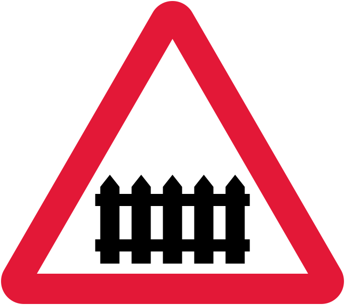

Loading...

Level crossing with gate or barrier ahead
⚠ Warning Signs
📖 Description
This sign warns of a railway level crossing ahead that is protected by gates or barriers. Drivers should be prepared to stop when the barrier is lowered or warning signals are active.